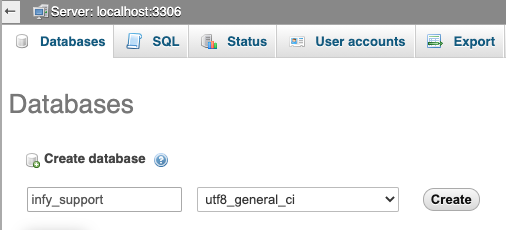
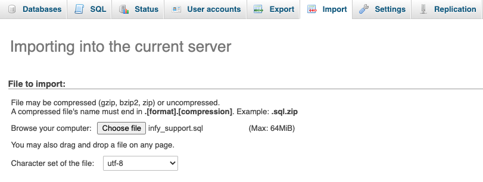
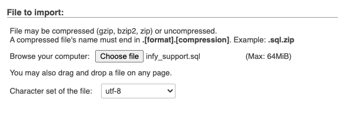
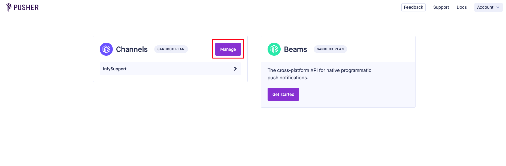
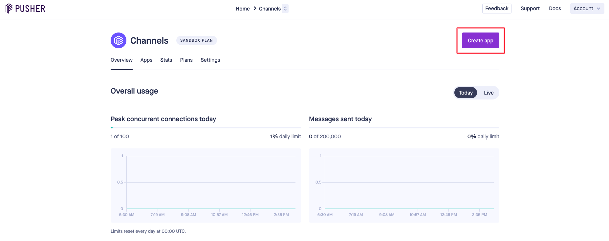
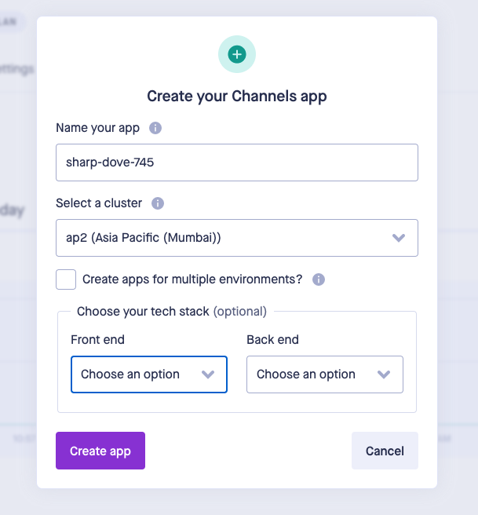
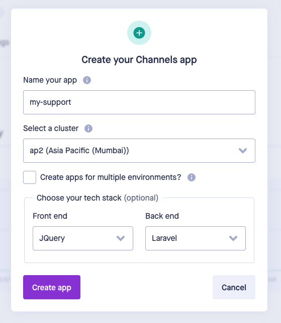
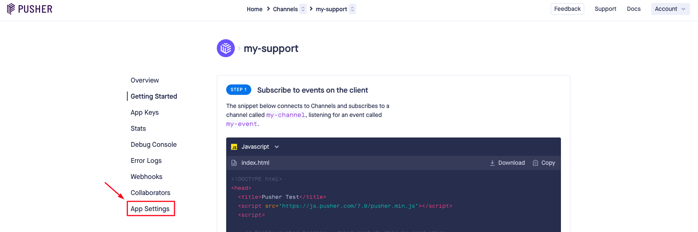
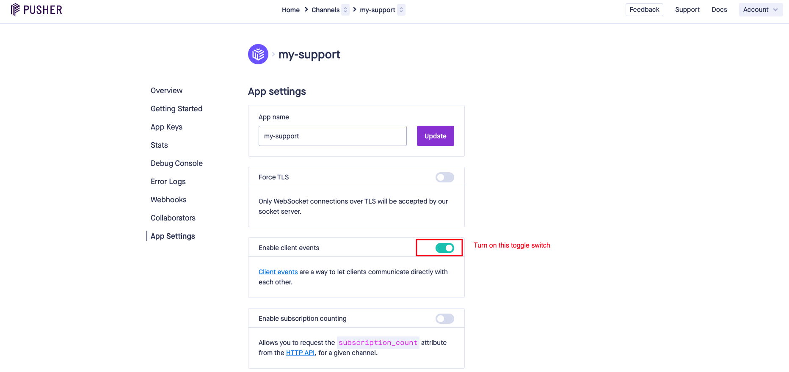
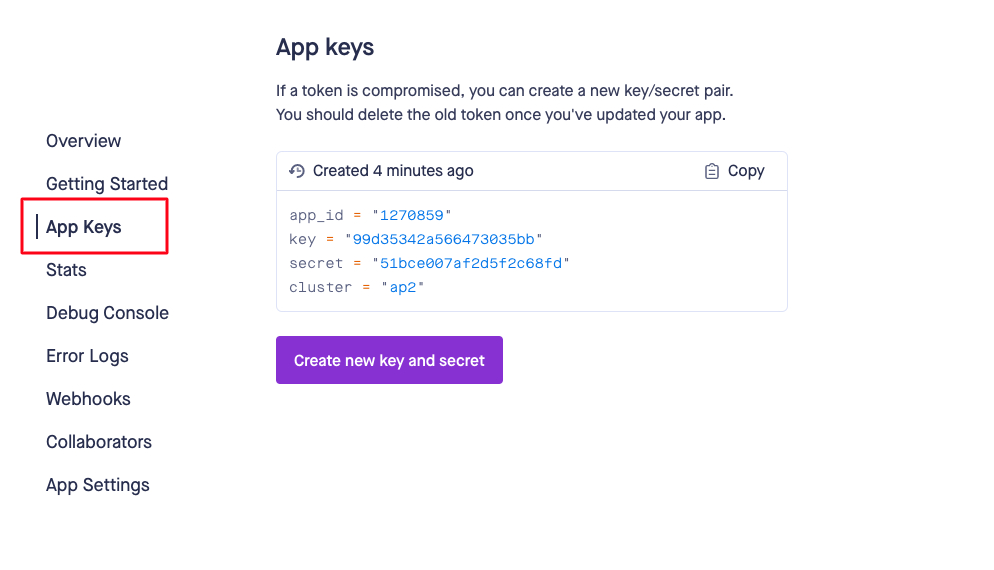

# Guide
Help Desk For Customers to track their tickets progress.
# Technologies Used
This system uses multiple technologies to give the best possible experience.
- PHP with Laravel Framework
- MySQL 5.6+
- PHP 7.2+
- jQuery
- Ajax
# Installation Guide
We tried our best to make the installation of the system as easy as possible. System Requirements It is assumed that you have primary knowledge Laravel installation knowledge since this application is built on Laravel.
# System Requirement
It is assumed that you have primary knowledge Laravel and JS application installation knowledge since this application is built on Laravel with JS.
You can read about laravel Requirements here (opens new window)
(Optional) You need update below variables in php.ini file if you want to send bigger files.
upload_max_filesize = 50M
max_file_uploads = 50
post_max_size = 100M
# Setup InfySupport into Local Environment
You can setup InfySupport into your local by using both zip files, but we recommend to use dist file, so you have to perform minimal steps.
Here are some steps to setup InfySupport into your local environment :
# 1. Install xampp/wamp (if you don't have it).
# 2. Create folder
InfySupport
- if you are using wamp then create InfySupport folder under you_path_to_wamp/www/
- if you are using xamp then create InfySupport folder under you_path_to_xamp/htdocs/
# 3. Unzip dist zip to InfySupport folder
# 4. Point the domain to the uploaded folder
You need to create virtual host first to setup InfySupport. You can find steps here to create virtual host.
- You can find steps here (opens new window) to create virtual host on
XAMPP. - You can find steps here (opens new window) to create virtual host on
WAMP.
Point your domain or subdomain to the InfySupport folder.
Please note that, InfySupport must be installed on a primary domain or subdomain. Installing on a sub-folder will not work, for example:
example.com/InfySupport (Invalid)
localhost/InfySupport (Invalid) if you are putting it in sub folder or root website)
example.com (Valid)
local.InfySupport.com (Valid)
InfySupport.test (Valid)
# 5. Setup the project's details
Please Click Here to follow the next steps for project setup.
# Setup InfySupport System
If you have purchased the InfySupport system then you will be able to find the zip named dist.zip.
If you want to setup InfySupport into your local environment then you can take help from
here here.
Now if you want to setup InfySupport on your server then you can directly copy the
dist.zip folder to your web root directory on a server and the following steps:
# 1. Copy files to web server
Upload dist.zip to your web server's root (public_html) and extract it there.
# 2. Setup Default DB
- Open PHPMyAdmin on your server and do a login.

- Click on the Databases tab.

- Create a new database and specify a Database name of your choice and Click Create button.

Now on the left, select the database (infy_support) OR the one that you have created.
Click Import in the top menu

- Under Import, choose the default sql file from
dist/database/infy_support.sqland click button Go.

# 3. Setup environment .env file
- Open .env file from your server's root folder.

- Update your .env file
You need to change the following information into your environment (.env) file.
- APP_NAME - Name of your Application
- APP_URL - Change this URL with your server URL (including trailing path if you are putting it in sub folder or root website)
- DB_HOST - Put your database hostname here
- DB_PORT - Put your database port here if it does not default to 3306
- DB_DATABASE - Change it to your database name
- DB_USERNAME - Name of your database user
- DB_PASSWORD - Password of your database user
You will also need to set up mail configuration, you can read more about here for that setup based on mail service that you use.
- MAIL_MAILER
- MAIL_HOST
- MAIL_PORT
- MAIL_USERNAME
- MAIL_PASSWORD
- MAIL_ENCRYPTION
- ADMIN_EMAIL
- MAIL_FROM_ADDRESS=${ADMIN_EMAIL}
- MAIL_FROM_NAME="${APP_NAME}"
If you want to store your files to direct your s3 bucket then you have to use following
.env variables.
You need to change FILESYSTEM_DRIVER and MEDIA_DISK value to
s3 when you are using AWS file storage.
- AWS_ACCESS_KEY_ID=
- AWS_SECRET_ACCESS_KEY=
- AWS_DEFAULT_REGION=us-east-1
- AWS_BUCKET=
- AWS_ENDPOINT=
- AWS_URL=
Or you can use your choice of storage driver to store your media assets if you want. All of your attachments will be placed into that.
Setup the google and facebook social login. find step To Setup Google Login to set up google login and click To Setup Facebook Login to setup the facebook login.
- GOOGLE_CLIENT_ID=
- GOOGLE_CLIENT_SECRET=
- GOOGLE_REDIRECT={APP_URL}/login/google/callback
- FACEBOOK_APP_ID=
- FACEBOOK_APP_SECRET=
- FACEBOOK_REDIRECT={APP_URL}/login/facebook/callback
# 4. Admin login
You can do admin login by accessing given URL.
YOUR_APP_URL/login
email: admin@infysupport.com
password: 123456
# 5. Setup Pusher Configuration
Go to pusher (opens new window) website and do sign up and if you have an account you can login.
- After Login you will get below screen.

- Click on “Manage” button. After clicking this button you get below screen.

- Click on “Create app” button. After clicking this button you get below screen.

- Now give your app name, select your cluster, select “JQuery” from front-end tech, “laravel” from back-end tech and click on “Create app” button. As shown in below image.

- After creating app yow will redirect to below screen. After that click on “App settings” menu as pointed in below screen.

- After clicking on “App Settings” you will redirect to below screen. From there turn on “Enable client events” toggle switch.

- Now click on “App Keys” menu and you will get below screen.

Now add this values in you env file.
- PUSHER_APP_ID - Your pusher app id - PUSHER_APP_KEY - Your pusher app key - PUSHER_APP_SECRET - Your pusher app secret - PUSHER_APP_CLUSTER - Your pusher app cluster
# 6. Setup Google Login
You just need google client id, secret and redirect URL for google auth login.
You can find steps here (opens new window) or you can watch video at here (opens new window)
NOTE: DO not forget that Authorized Redirect URI should be e.g : YOUR_DOMAIN/login/google/callback, you just need to replace YOUR_DOMAIN by your domain name.
Now you have Client ID, Client Secret and Redirect URI so replace its value into appropriate .env variable.
Google social login env variables are following :
- GOOGLE_CLIENT_ID=
- GOOGLE_CLIENT_SECRET=
- GOOGLE_REDIRECT={APP_URL}/login/google/callback
# 7. Setup Facebook Login
You just need facebook app id, app secret and redirect URL for facebook auth login.
You can find steps here (opens new window)
NOTE: DO not forget that Authorized Redirect URI should be e.g : YOUR_DOMAIN/login/facebook/callback, you just need to replace YOUR_DOMAIN by your domain name.
Now you have App ID, App Secret and Redirect URI so replace its value into appropriate .env variable.
Facebook login env variables are following :
- FACEBOOK_APP_ID=
- FACEBOOK_APP_SECRET=
- FACEBOOK_REDIRECT={APP_URL}/login/facebook/callback
# Key Features and Concepts
Here are some Key Features and Concepts that InfySupport provides.
# Multi languages Support
We are supporting 9 languages in each panel (Admin | Agent | Customer)
- English
- Spanish
- French
- German
- Russian
- Portuguese
- Arabic
- Chinese
- Turkish
# Beautiful Website
InfySupport comes with beautiful landing page which help customers to register into system and create tickets.
Customers can search public tickets and check comments on that tickets. Sometimes they don't need to create a ticket at all. as same tickets will be created by some other users too.
Customers must have to do registration into system while submitting their first ticket. Later they can log in into a portal and track their ticket status there.
If ticket status is private then only owner of the customer can see that ticket, for that they can use search ticket option on a website. For searching private ticket they have to add unique ticket number and their email.
# Admin Panel
# Dashboard
All the information at a glance about what's happening in the support system. How many tickets submitted so far. How many tickets are still active and how many are closed. It is the place where system admin can have a complete idea about his site.
On admin dashboard they view various charts like how many tickets assigned to particular agents, how many tickets submitted on a particular category.
# Agents
Agent will play import role in this system as they are going to manage the customers and their tickets.
Admin can manage all agents from Agents menu. See their profile information and make edits if needed. Even he can create and delete the agents.
Admin can see the tickets details, that how many tickets are assigned to related agent How many tickets are closed, open for a specific agent.
# Customers
Customers will be handled by agents. Customer will create tickets and raise issues to support system.
They cal also do a login and check his tickets that they created. They can add comments to tickets.
# Categories
Every ticket can be categorized into a different category based on its purpose. So it is easy for the admin to find out how many tickets have been submitted on a particular category.
Admin can see lists of tickets by a category in this module, that how many open / closed tickets are there in a specific category.
# Tickets
Admin can see all the tickets that are in system in this module. Admin can also create new tickets on behalf of customer and assign it to related agent.
Admin can delete a specific ticket too and able to change the ticket status.
# Conversations
New customer conversation is arrived here. Admin can communicate with customer and assign agent to that customer. Admin also view all communication between customer and agent.
# FAQs
Manage your website FAQs in this module to answer users' frequently asked questions.
# Settings
Various settings related to support system branding like, name, company url, logo, footer, company address, social media links etc. can be managed from this section.
# Agent Panel
# Dashboard
This is where an agent can see statistics of his account about currently open tickets, closed tickets, etc. On agent dashboard they view various charts like how many tickets assigned to them on a particular category.
# Tickets
The agent can manage the ticket assigned to them from here. He can reply the ticket. After resolving the customer's problem, they can also change the status of the ticket.
# Conversations
Assigned conversation view here. Agent can reply the customer queries from here. Agent also start new conversation with other members.
# Customer Panel
# Dashboard
This is where customer can see statistics of his account about currently their open tickets, closed tickets.
# My Tickets
Customer can see the status of his ticket. He can reply to the ticket. Once they get an answer to their problem, they can close the ticket from here.